Diperkirakan warteg muncul sekitar tahun 1960-an. Kemunculannya bebarengan dengan pembangunan infrastruktur Ibu Kota yang berjalan pesat setelah 20 tahun kemerdekaan Indonesia.
Kala itu Presiden Soekarno memang berupaya mempercepat pembangunan Ibu Kota. Momen ini lalu dimanfaatkan oleh warga Tegal untuk mengadu nasib di Jakarta yang saat itu kebanyakan bekerja sebagai buruh bangunan di lokasi proyek. Usaha buka warteg ini biasanya dilakukan para istri mereka.
Nasi ponggol sendiri merupakan hidangan nasi putih lauk sambal tempe dan tahu yang dibungkus daun pisang. Ini merupakan kuliner khas tegal yang sudah ada berabad-abad lalu. Harga yang ditawarkan kala itu sangat murah meriah, namun rasanya tetap lezat dan mengenyangkan. Sejak itulah nasi ponggol jadi idaman para pekerja bangunan.
Seiring waktu, karena kepopulerannya, dibangunlah warung-warung kecil dengan ukuran 3×3 dengan menu ponggong di sekitar lokasi proyek pembangunan. Namun ternyata kuliner ini juga disukai warga Jakarta, baik dari segi rasa dan harga. Akhirnya merambahlah warteg ke pemukiman di awal tahun 1990-an dengan menu yang lebih beragam, tak hanya nasi tahu tempe saja.
warpat sendiri di buka pada 2012 di mana pertama kali di resmikan bertempat di bekasi,Warpat hadir dengan 68 Outlet Online Delivery yang tersebar di Jabodetabek, Purwakarta, Jatinangor, Cimahi & Bandung. Memudahkan pesan makanan karena dekat dan cepat.warpat sendiri memiliki makanan yang khas dan pastinya lezat,sebab di resep yang di buat turun temurun sehingga menghidangkan hidagan yang nikmat dan mengenyangkan.
 
